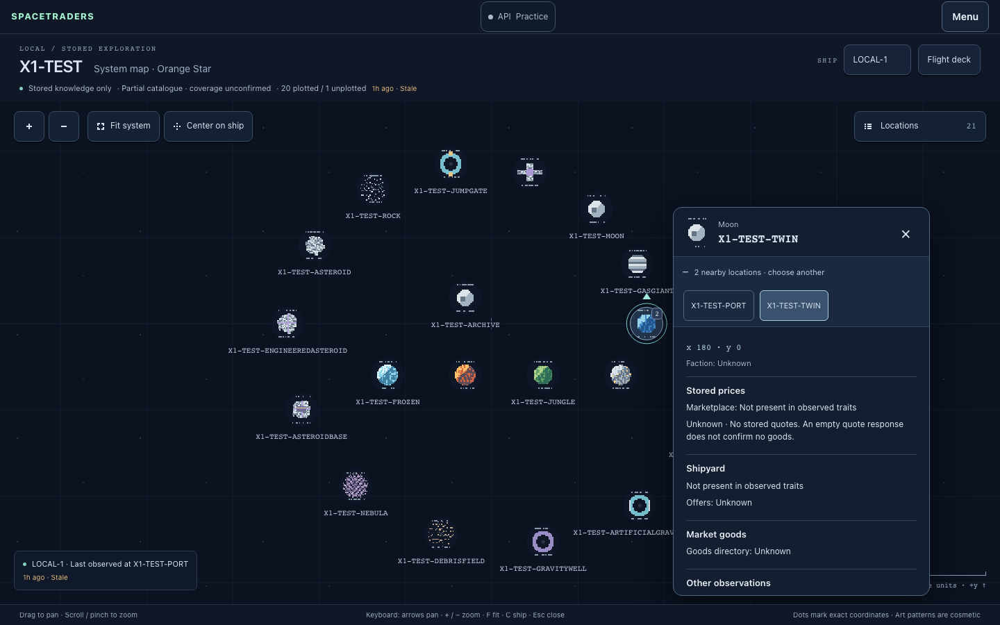
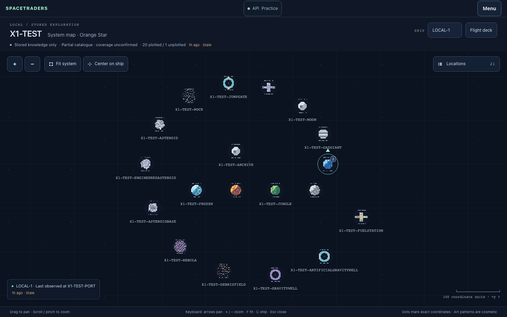
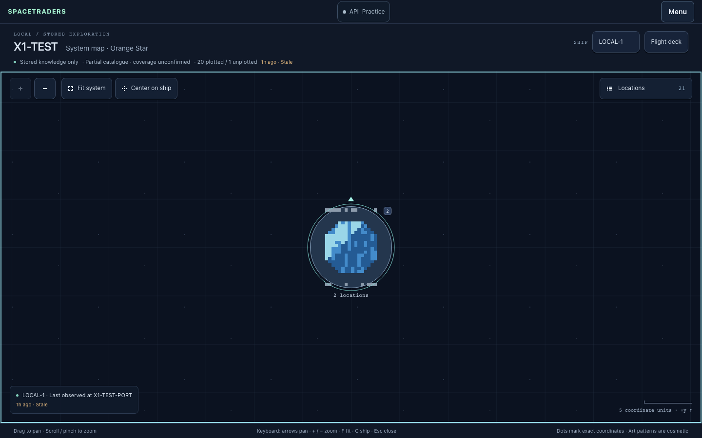
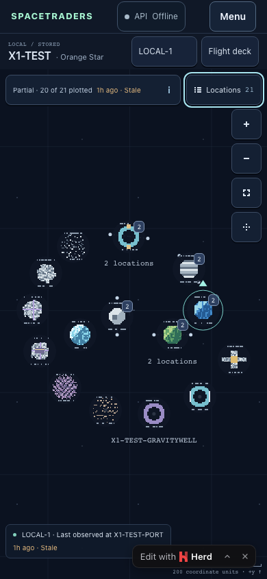
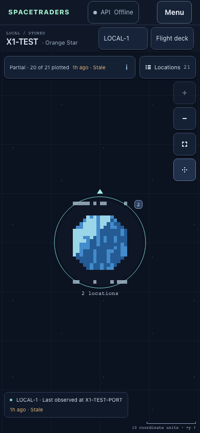
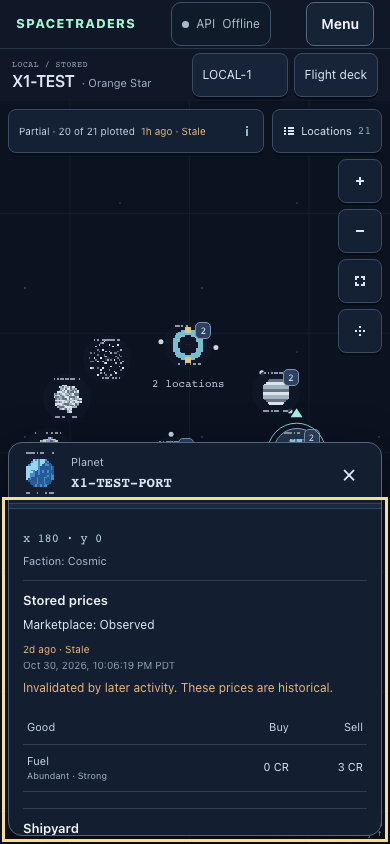
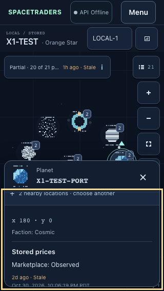

26 browser scenarios passed. 518 PHP tests / 3,041 assertions and 7 map JavaScript tests passed. Production build, source-scanning checks, Pint and whitespace checks passed.
Claude Sonnet 5.5 implemented the requested UI design pass. Parent QA inspected the rendered results and reproduced/fixed coverage-panel Escape priority. The phone map occupies 743px of a 390×844 viewport. Compact 44px icon controls leave room for the map, while coverage detail remains one tap away.
Waypoint artwork grows from 40px to 160px with zoom. Buttons, wheel, keyboard and emulated touch share the close-up limit. Labels, hit targets, groups, ship indicator and card anchors account for artwork size. Crisp deterministic vector pixels need no replacement bitmap assets.
The existing 24-scenario suite passed again, plus a new native browser check for map area, disclosure, touch targets and Escape priority. Native wheel/touch use fresh Playwright Chromium contexts against the owned fixture Herd site. T3 preview had previously twice failed the wheel step with “Native wheel QA failed: preview scroll did not change map zoom”; final native input checks use the supported fallback. T3 also checked the final rendered layout and real map interactions.
The final location-card pass puts stored prices, shipyard offers and market goods before terrain and lore. A compact disclosure keeps overlapping locations selectable without filling the phone card. Quote freshness, invalidation, unknown values, confirmed empty lists, provenance and every stored description remain available. The final 26-scenario run covers ordering and expanded overlap selection. The revised card also passed real stored-data selection without changing gameplay records or request counters.
After explicit user authorization, 14 real GET requests returned HTTP 200 and stored a 94-location catalogue and local service observations. Orbit and dock confirmed through normal preview, approval, the shared queue worker and authoritative responses. The ship returned to its original dock with unchanged fuel, cargo and credits. No spending was needed. Browsing the live map and refreshing the API tracker left gameplay hashes and upstream counters unchanged.
The live preview serves this worktree’s code and tracked assets through a dedicated Herd host. It shares the existing database, locks, budget and engine; it creates no duplicate command authority. A verified private SQLite backup was taken first. Credentials, sessions, raw live data and screenshots stay outside Git.
Exact source and asset hashes · Sanitized results · Earlier integration QA and independent source review
| Scenario | Result | Observed |
|---|---|---|
| desktop-entry | Pass | Agents → flight deck → map; stored selected ship and current built assets verified |
| desktop-camera | Pass | Native wheel, drag, both zoom buttons, fit and center all changed the expected camera values |
| desktop-marker-drag | Pass | Dragging from artwork pans; a subsequent click still opens the location |
| desktop-all-locations | Pass | Every one of 21 stored locations opens and closes, including the unplotted entry |
| desktop-all-markers-overlaps | Pass | 19 map markers and both co-located locations individually selectable; Escape restores marker focus |
| location-card-information-order | Pass | Prices, shipyard and goods precede terrain/lore; overlap choices expand on demand and retain selection |
| desktop-card-states-scroll | Pass | Stored text, empty and unknown states, stale/invalidated zero-valued prices, and native card scrolling verified |
| desktop-keyboard-dismissal | Pass | Keyboard pan/zoom/fit/center, Tab+Enter, Escape focus restore and outside click verified |
| open-card-camera-controls | Pass | Zoom, pan, Fit and Center retain the location card and control focus; ship picker works while a card was open |
| nearby-keyboard-and-scroll-reset | Pass | Nearby keyboard selection retains button focus and replacing a scrolled card resets details to the top |
| browser-shortcuts-and-global-escape | Pass | Browser modifier shortcuts remain available, Escape works from controls, and marker focus has an inset visible ring |
| wheel-line-units | Pass | Line-mode wheel events normalize consistently with pixel-mode wheel input |
| unplotted-controls-access | Pass | Unplotted information opens away from the desktop camera controls |
| ship-selection-history | Pass | All ships, empty observations/fleet, transit departure, reload, generic link, back/forward and deck round trip verified |
| rate-tracker-navigation | Pass | API tracker refresh/Done/Escape and focus containment, Menu Done/Escape and affected navigation verified |
| rate-tracker-states | Pass | Browser-mocked tracker snapshots show ready, low capacity, cooldown, unavailable and recovery; two budgets and dark details render without upstream calls |
| navigation-and-signout | Pass | Skip link, same-page System map, Agents link, brand, sign out, authentication redirect and fresh login verified |
| zoom-limits-directory-toggle | Pass | Artwork grows from 40px to 160px; button, keyboard and wheel stop at close-up limit; Fit and directory recover |
| map-read-only-boundary | Pass | Gameplay table hashes and fake transport calls/writes unchanged, including API tracker refresh |
| phone-layout | Pass | Map, tracker, controls and open location card fit 390x844; 331px detail area remains keyboard-scrollable |
| small-phone-layout | Pass | Map, tracker, controls and open location card fit 320x568; 185px detail area remains keyboard-scrollable |
| phone-landscape-layout | Pass | Map, tracker, controls and open location card fit 844x390; 170px detail area remains keyboard-scrollable |
| reflow-layout | Pass | Map, tracker, controls and open location card fit 720x450; 230px detail area remains keyboard-scrollable |
| mobile-knowledge-and-map-space | Pass | 390x844 map uses at least 740px height, touch targets are 44px, knowledge opens/closes and Escape respects overlay priority |
| two-finger-tap-card | Pass | Two-finger gesture without motion retains the selected card |
| native-touch | Pass | Trusted Chromium touch pinches and pans, selects overlap members, closes cards, stops pinch zoom at close-up limit and recovers with Fit |







Physical phones, hardware trackpads, Safari, Firefox, screen readers and hardware safe-area insets remain untested. The camera does not automatically pan a selected marker clear of the phone card. Coverage and prices describe stored observations and may be old or incomplete. No deployment or PR merge was performed.